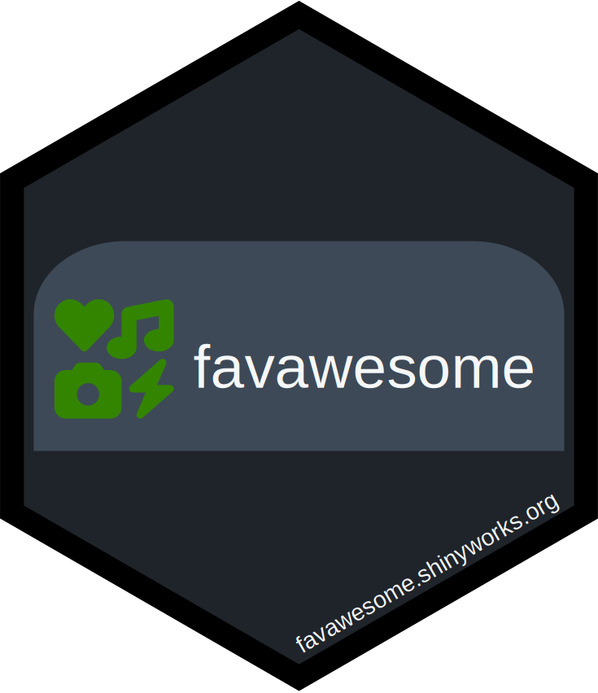

Add favawesome_icon Function to a Project
Source:R/use_favawesome_standalone.R
use_favawesome_standalone.RdIf you can't import favawesome in your project, you can still use a Font
Awesome (https://fontawesome.com) icon as the favicon (the icon that
appears on browser tabs). Calling this function will download the necessary
code to add a favawesome_icon() function to your project, and will ovewrite
the existing file if it already exists, making it easy to update the code.
The favawesome_icon() function takes the same arguments as fav().
Value
NULL invisibly (called for side effect of importing the
favawesome_icon() definition). favawesome_icon() returns the same value
as fav().